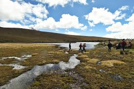
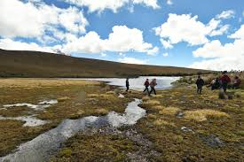

El Honorable Consejo Provincial de Tungurahua es una institución clave en el desarrollo y administración de la provincia. Su misión principal es promover el bienestar de la comunidad mediante la planificación, ejecución y supervisión de proyectos que abarcan áreas como infraestructura vial, conservación ambiental, desarrollo agropecuario, turismo y cultura. Además, fomenta la participación ciudadana y la colaboración interinstitucional para garantizar un progreso sostenible y equitativo. Este consejo trabaja en conjunto con el Prefecto y otros actores locales para implementar estrategias que beneficien a los habitantes de Tungurahua y fortalezcan su identidad como una región rica en biodiversidad, historia y tradición.
 
